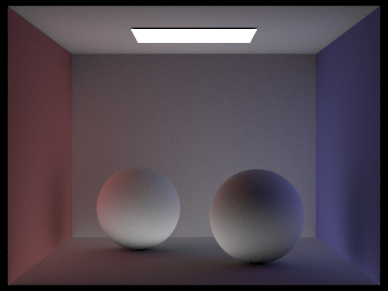

In this project, we implemented a pathtracing algorithm in order
to render realistic pictures. We first implemented ray generation
and intersection which involved us computing the x and
y position in screen space from the virtual camera
sensor as well as Möller Trumbore Algorithm for handling triangle
intersections. Then we implemented a Bounding Volume Hierarchy which
allowed us to accelerate finding ray intersections with primitives
in our scences. Then we implemented two different direct lighting
techniques, hemisphere lighting and importance sampling, with importance
sampling rendering better images. Next, we implemented global illumination
which renders both direct and indirect lighting effects. Finally,
we implemented adaptive sampling which allowed us to render scenes
at a much faster rate.
Part 1: Ray Generation and Intersection
To generate a ray that is pointing to a specific (x,y) coordinate in screen space we first need to multiply the x and y coordinates with the width and height of the virtual camera sensor. The width and height of the sensor is given by \(\tan(\frac{hFov}{2})\) and \(\tan(\frac{vFov}{2})\). We then just set the z coordinate to -1 and we have the direction of the Ray in camera space. We then need to transform the ray into world space by multiplying it by the c2w matrix.
Then for each pixel in the screen buffer we send a few rays out and average their radiance to get the radiance of the pixel. In order to get the radiance for each pixel we need to handle ray triangle intersections. We did this by using Möller Trumbore Algorithm as described in lecture. This gave us t and the three barycentric coords of the intersection. If the barycentric coords are all positive, we know that the ray intersected the triangle. With this done we were able to render our our first scene.

Part 2: Bounding Volume Hierarchy
In our BVH algorithm, when we construct a new BVH from a given
vector of primites and a maximum leaf configurations, we simply
construct a new node with the same amount of primitives if the
number of primitives is less than or equal than the given maximum
leaf configuration. If there are more primitives than that, then
we split the list of primitives into and create a left and right
node to hold the two halves of the list. To split, we first compute
the mean centroid of all the primitives and then sort each of the
primitives into the left list if their x coordinate
is less than the mean centroid's x coordinate and into
the right list if it is greater. We repeat this spliting for the
y and z coordinates as well. Once we have
the six lists, we then choose which split we want based on which of
the 3 pairs (x-left/right, y-left/right,
z-left/right) have the most even split based on the number
of primitives on each side. In other words, we compute the difference
in number of primitives between the left and right lists for each of
the x, y, and z lists and choose
the pair that has the smallest difference. Finally, we recursively
construct a new BVH for the node's left and right node
with the chosen split.
To implement BVHAccel::intersect, we first check if the
current bounding box has an intersection and check that the t0
and t1 values are in the same interval as the max_t
and min_t so that we can return false immediately
if there is no intersection and or if the t values miss the
min and max t values. Then, we find the leaf node by recursively
going into the left or right node, chosing the node with the smallest
t value and setting the intersection attributes as we go.
Once we've reached a leaf node, we then iterate through the node's primitives
and count the number of intersections as well as return true if we do have
an intersection(s) and false if we don't. To implement
BVHAccel::has_intersection, we had a very similar process, except
we do not update any intersection attributes and we do not check for the
smallest t value, instead we simply return once we have found
an intersection.
|
|

|
|
We compared the rendering times on the cow, lucy, and Max Planck scenes with and without BVH acceleration. The cow took 20 seconds to render without BVH acceleration and 0.0730 seconds with BVH acceleration. Lucy took a whole 10 minutes to render without BVH acceleration and only took 0.5340 seconds with BVH acceleration. Max Planck took 200 seconds to render without BVH acceleration and 0.1960 seconds with BVH acceleration.
| without BVH | with BVH | |
|---|---|---|
| Cow | 20 seconds | 0.0730 seconds |
| CBlucy | 10 minutes | 0.5340 seconds |
| Max | 200 seconds | 0.1960 seconds |
Part 3: Direct Illumination
There were two different direct lighting techniques we implemented. The first was hemisphere lighting. For this, when a ray intersected a surface several other rays were sent out from the intersection point. The direction of these rays were generated at random from the hemisphere. We then averaged together the light from all these light rays, which gave us an estimate of the amount of light hitting the object at that intersection point.
We also implemented importance sampling. For this, instead of generating the rays at random from the hemisphere, we sampled the rays from the known locations of the light sources in the scene. If these generated rays intersected the scene before they hit the light source then the ray contributed no light. Otherwise is contributed whatever the light emited.
Below we have rendered several images with different amount of light samples to compare hemisphere with importance sampling. All of them were generated with a single sample per pixel. For the hemisphere sampling, it's not until we have 16 light samples that we can even begin to make out what the image is, and even at 64 light samples, the image still is very noisy. When we compare this to the importance sampling, even with 1 light sample the image is more clear than the hemisphere with 64 light samples. By the time importance sampling uses 64 light samples the waylls have become completely smooth.
| Hemisphere | Importance | |
|---|---|---|
| l=1 | ||
| l=4 | ||
| l=16 | ||
| l=64 |
Part 4: Global Illumination
The global lighting function is recursive. The base case happens when the depth in the ray is 1. In this case we return just the direct lighting of that ray at that interesection point. If the depth is greater than this, then the direct lighting is still calculated but in addition light from a bounced ray is added as well. The direction of this ray is determined from the sample_f function of the bsdf. For the diffuse bsdf in this part, this was cosine weighted sampling. Then this ray was given a depth of the previous rays depth minus 1, and then the function was called on this new function.
We also implemented russian roullete in order to increase efficiency. That meant that on any given recursive step, there was a chance the recursion would stop. We chose our termination probability to be 0.35. This meant that for every step that did not terminate we also had to weight its output by the continuation probability.
| Indirect | Global (Both) | Direct |
|---|---|---|
|  |
Here is CBbunny.dae rendered with max_ray_depth
set to 0, 1, 2, 3, and 100, all with 1024 samples per pixel.
max_ray_depth = 0 |
max_ray_depth = 1 |
max_ray_depth = 2 |
max_ray_depth = 3 |
max_ray_depth = 100 |
Here is the spheres scene rendered with 1, 2, 4, 8, 16, 64, and 1024 sample-per-pixel rates, all with 4 light rays.
|
|
|
|
|

|
|
|
|

|
Part 5: Adaptive Sampling
We implemented adaptive sampling in the same way as it is described in the documentation. After taking a number of samples equal to the batch size we calculated the mean and standard deviation of the illuminance of the pixel. We calculated a value \( I = 1.96 \cdot \frac{\sigma}{n} \) and if \( I \leq maxTolerance \cdot \mu \) we would stop sampling. You can see in the images above that the sampling rate is no longer uniform.